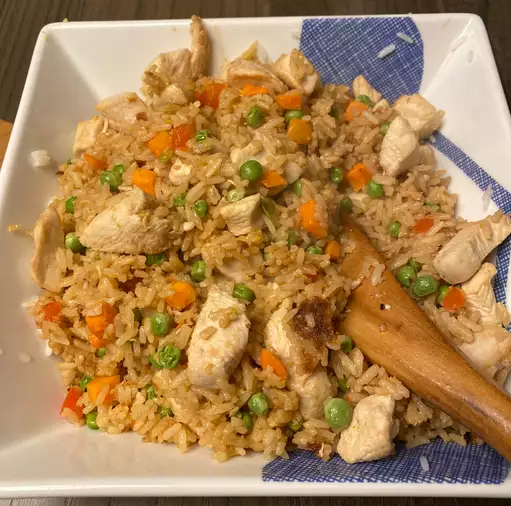

Garlic Chicken Fried Brown Rice

A Delicious Asian Dish
Leftover brown rice is reborn in this chicken fried rice with peppers and onions.
Black pepper,paprika,or dried parsley may be used to season after is cooked.
Ingredients
- 2 tablespoons vegetable oil,divided
- 8 ounces skinless, boneless chicken breast, cut into strips
- ½ red bell pepper, chopped
- ½ cup green onion, chopped
- 4 cloves garlic, minced
- 3 cups cooked brown rice
- 2 tablespoons light soy sauce
- 1 tablespoon rice vinegar
- 1 cup frozen peas, thawed
Directions
Step 1
- Heat 1 tablespoon of vegetable oil in a large skillet set over medium heat.
- Add the chicken, bell pepper, green onion and garlic.
- Cook and stir until the chicken is cooked through, about 5 minutes.
- Remove the chicken to a plate and keep warm.
Step 2
- Heat the remaining tablespoon of oil in the same skillet over medium-high heat.
- Add the rice; cook and stir to heat through.
- Stir in the soy sauce, rice vinegar and peas, and continue to cook for 1 minute.
- Return the chicken mixture to the skillet and stir to blend with the rice and heat through before serving.